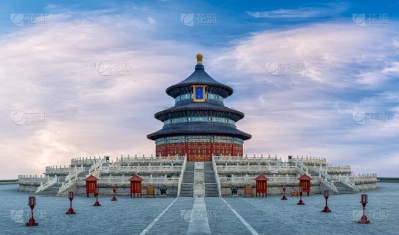
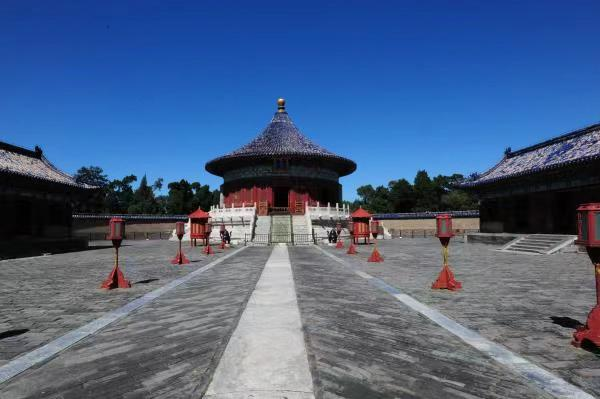
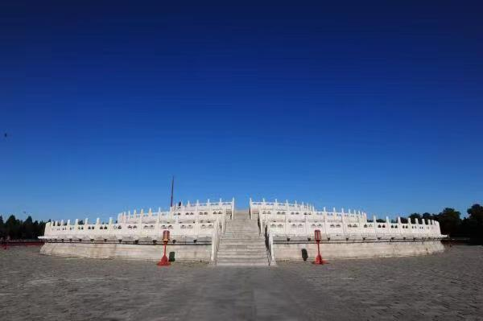
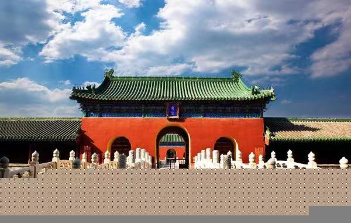
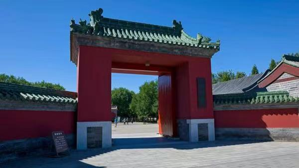

|  | 祈年殿
建于永乐十八年（1420），初名“大祀殿”，为一矩形大殿，用于合祀天、地。嘉靖二十四年（1545）改为三重檐圆殿，殿顶覆盖上青、中黄、下绿三色琉璃，寓意天、地、万物，并更名为“大享殿”。乾隆十六年（1751），改三色瓦为统一的蓝瓦金顶，定名“祈年殿”，是孟春（正月）祈谷的专用建筑。祈年殿殿高38.2米，直径24.2米，内部开间还分别寓意四季、十二月、十二时辰以及周天星宿。 |
| 皇穹宇
建于嘉靖九年（1530）。初为重檐圆形建筑，是圜丘坛天库的正殿。用于平日供奉祀天大典所供神位的殿宇。嘉靖十七年（1538）改名为“皇穹宇”。乾隆十七年（1752）改建为今式。皇穹宇殿高19.5米，直径15.6米，木拱结构，严谨、精致，上覆蓝瓦金顶，精巧而庄重。殿内天花藻井为青绿基调的金龙藻井，中心为大金团龙图案，是古代建筑杰作。 |
 |
|  | 圜丘
建于嘉靖九年（1530）。每年冬至在台上举行“祀天大典”，俗称祭天台。初为一蓝琉璃圆台，乾隆十四年（1749）扩建，同时变蓝琉璃为汉白玉石栏板，艾叶青石台面。圜丘的石阶、各层台面石和石栏板的数量，均采用“九”和“九”的倍数，以应“九重天”。通过对“九”的反复运用，以强调天的至高无上地位。 |
| 斋宫
建于永乐十八年（1420），是皇帝斋戒专用宫室。祀前皇帝需提前三天到斋宫斋戒，要求不茹荤、不饮酒、不听音乐、不入内寝、不理刑名、不问疾吊丧，清正洁身，以示敬诚。斋宫位于祈谷坛西南隅，朝向取东，瓦用绿色表达了帝王向天称臣、庄敬恭谦之意。天坛斋宫，平面正方形，面积近4万平方米。宫内建有无梁殿、寝殿、铜人石亭、钟楼、值守房和巡守步廊等礼仪、居住、服务、警卫专用建筑。斋宫布局严谨，环境典雅，以宫墙两重、御沟两道环护。 |
 |
|  | 神乐署
建于永乐十八年(1420)原名神乐观，隶属太常寺，是祭祀乐“中和韶乐”的教习管理机构。署内有凝禧殿、显佑殿、昭佾所、穆佾所、伶伦堂及袍服库等建筑。 |
| 祈年门
是祈年殿院落的正门，为庑殿顶建筑。殿宇五间，崇基石栏，是中国古代最高等级门制。祈年门中门供皇天上帝专用，皇帝进出左（东）门，百官进出右（西）门。该建筑系明初原物。 |